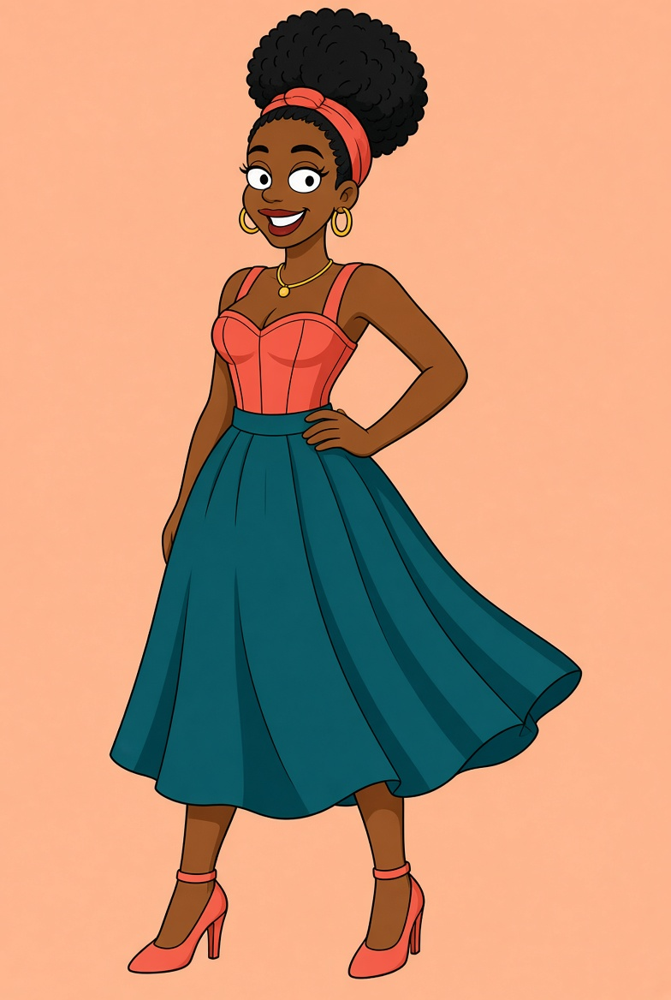

CREATEyour spark.
CREATIVE · A MINUTE OR TWO
Style Spark
A fresh daily brief. Four pieces. An outfit that’s entirely you. Dress Thandi, reveal your look and build your archive.
Play Style SparkTHE PLAYFUL SIDE OF JANE.M
Take a creative pause or chase your next high score. Two ways to play, one love of fashion.

CREATECREATIVE · A MINUTE OR TWO
A fresh daily brief. Four pieces. An outfit that’s entirely you. Dress Thandi, reveal your look and build your archive.
Play Style SparkQUICK THINKING · THREE ROUNDS
The workroom has gone wonderfully wild. Gather the supplies, dodge runaway scissors and deliver your look.
Play Atelier DashFree to play. No account needed. Your progress stays in this browser.